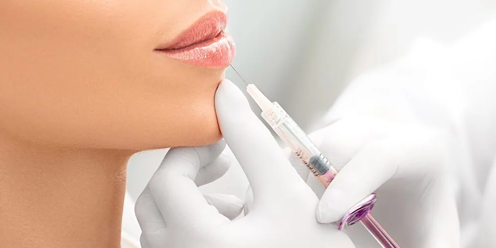
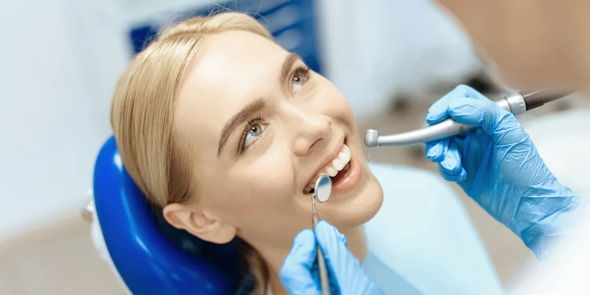

Dermalna polnila
Za kožo je vsebnost vode ključnega pomena. Hialuronska kislina nase veže vodo in s tem vpliva na tonus in volumen kože.
Naročite se na pregled →
Kaj so hialuronska dermalna polnila?
Koža s starostjo izgublja elastičnost, maščobne blazinice obraza, globoke in povrhnje, pa izgubljajo volumen. Proces se odraža v utrujenem ter postaranem videzu.
Hialuronsko dermalno polnilo je naravna, človeku lastna sestavina telesa, zato ga telo ne prepozna kot tujek in je varno za uporabo. Osnova je hialuronska kislina, ki je v koži tudi sicer naravno prisotna, s staranjem njena količina pada, hkrati pa jo razgrajuje encim hialuronidaza. Hialuronska kislina ima naravno sposobnost, da nase veže velike količine vode, zato kožo hidrira, uravnava tonus in s tem vpliva na volumen. S smotrno uporabo polnil lahko obrazu vrnemo volumen, s tem pa mladosten ter svež videz.
Zakaj se uporabljajo dermalna polnila – fillerji in kdaj pričeti?
Hialuronsko dermalno polnilo se lahko uporablja pri ženskah in moških za:
- Glajenje nazolabialnih ter marionetnih linij,
- Povečanje ustnic,
- Povrnitev volumna na področju lic, oblikovanje lic, obraza,
- Odpravo/korekcijo brazgotin,
- Korekcijo brade, nosu,
- Korekcijo staranja na hrbtišču roke.
Gube lahko zmanjšamo takoj, ko se pojavijo, zato pravila, kdaj pričeti, ni. S tem ko pričnemo dovolj hitro, preprečimo nastanek globokih gub. Tudi korekcija in povečanje ustnic s hialuronskim polnilom je danes že pogost poseg, s katerim lahko poskrbimo za videz bolj polnih ali pa bolj skladnih ustnic. Tkivno polnilo za ustnice ima v nasprotju s hialuronsko kislino posebno zgradbo in je zato bolj odporno tudi na encim hialuronidazo. Zato učinek polnil za ustnice traja do 15 – 18 mesecev, nato pa se postopek lahko ponovi.
Kako poteka poseg in kdaj so vidni učinki dermalnih polnil?
Pred posegom opravi stranka s strokovnjakom posvet, kar je najdaljši in najpomembnejši del celotnega procesa. S stranko se natančno pogovorimo o možnostih ter omejitvah posegov ter kaj so realna pričakovanja glede končnega rezultata. Glede na želje se lahko opravi kombinacija tretmajev, vračanje volumna obrazu z dermalnimi polnili ter glajenje gub.
Za povečanje ustnic s hialuronsko kislino se uporablja polnila različnih gostot. Izbrano polnilo po posvetu s stranku vbrizgamo na željena mesta ustnic. Vse posege izvajamo ambulantno.
Kako dolgo traja poseg? Kaj je pomembno pri terapiji z dermalnimi polnili?
Sama aplikacija polnil ne zahteva posebne priprave, pomembno je, da na obrazu niso prisotna vnetja ali okužbe. Po čiščenju kože se nanese anestetik, po 15 minutah pa se s tanko iglico na izbrana mesta nanese še polnilo. Poseg ne traja dolgo, odvisno od obsega želj stranke, kot tak traja od 10-20 min.
Ali so možni neželjeni učinki ali komplikacije pri posegu z dermalnimi polnili?
Okrevanje po terapiji je zelo kratko, praktično takoj lahko pričnete z opravljanjem vsakodnevnih aktivnosti. Po tretmaju se na mesta posega 24h ne sme nanašati krem, ličil ali kakršnekoli druge kozmetike, da se izognemo potencialni okužbi mesta vboda.
Izogibati se je potrebno tudi dotikanju kože, npr. masažam obraza in podobno.
Stranski učinki so izredno redki, vsi so prehodnega značaja. S stranko se o njih temeljito pogovorimo. Med možne neželjene učinke sodijo manjše podpludbe na mestu vboda, bolečina na mestu vboda ter rdečina. Možne so bulice na mestu vboda, ki pa izginejo v roku 7 dni.
Imamo izkušnje, lahko vam pomagamo.
Za informativno ponudbo se naročite na neobvezujoč pregled.
Naročite se na pregled →Podobne storitve
Vse storitve →
Glajenje gubic obraza
Preparati, ki učinkovito gladijo gubice in preprečujejo nastanek novih.

Injekcijska lipoliza
Minimalno invazivno raztapljanje maščobnih oblog na področju podbradka.

Konzervativno in estetsko zobozdravstvo
Širok razpon preventivnega in estetskega zobozdravstva s poudarkom na estetiki.

Implantati
Manjkajoče zobe nadomestimo z zobnimi vsadki, implantati.